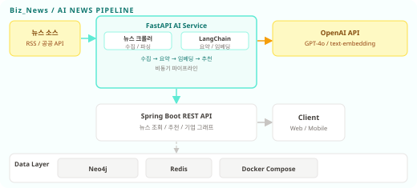

←
포트폴리오로 돌아가기
Biz_News
해커톤 본상 2등
2025.02 / 카카오테크 부트캠프 해커톤
최신 비즈니스 뉴스 자동 요약 및 기업 연관도 시각화 서비스
Spring Boot
FastAPI
LangChain
OpenAI API
Neo4j
Redis
Docker Compose
핵심 성과
해커톤 2등
카카오테크 부트캠프 본상 수상
AI 기반 뉴스 서비스 기획 및 구현
AI 파이프라인
수집 → 요약 → 임베딩 → 추천
LangChain + OpenAI 비동기 처리
아키텍처

주요 구현 내용
FastAPI 뉴스 수집 파이프라인
: RSS 및 공공 뉴스 API에서 최신 기사를 주기적으로 수집하고 파싱. 비동기 I/O로 다수 소스를 병렬 처리
LangChain + OpenAI 자동 요약
: 수집된 뉴스 본문을 LangChain 체인으로 GPT-4o에 전달하여 핵심 요약 생성. 프롬프트 엔지니어링으로 일관된 요약 포맷 유지
벡터 임베딩 기반 뉴스 추천
: text-embedding 모델로 뉴스 벡터를 생성하고 코사인 유사도로 관련 기사 추천. Redis에 임베딩 결과 캐싱
Neo4j 기업 연관도 그래프
: 뉴스 텍스트에서 기업 엔티티를 추출해 Neo4j 그래프 DB에 관계로 저장. 프론트엔드에서 기업 간 연관 관계를 인터랙티브하게 시각화
Spring Boot REST API 서버
: 클라이언트 요청 처리 및 FastAPI AI 서비스 연동. 뉴스 목록 조회, 추천, 기업 그래프 API 제공
Docker Compose 통합 배포
: Spring Boot, FastAPI, Neo4j, Redis 전체 서비스를 컨테이너로 구성하여 환경 재현성 확보